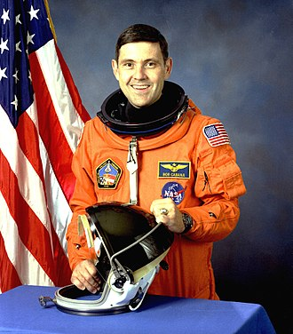
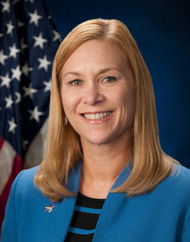
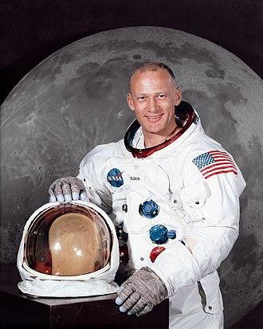
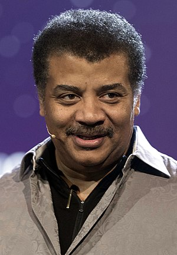
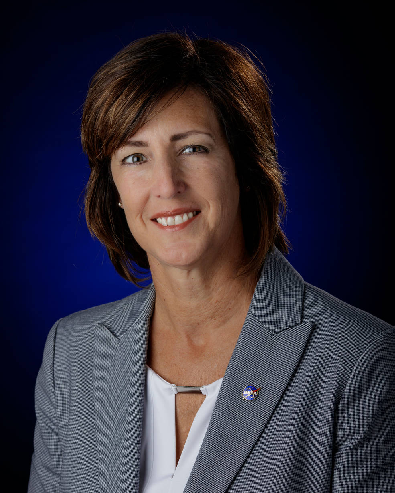
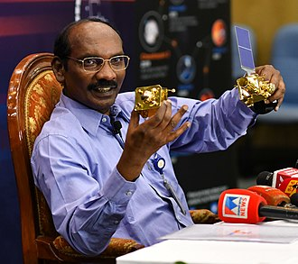

OUR SPEAKERS
Robert Donald Cabana
Robert Donald Cabana (born January 23, 1949) is the Associate Administrator of the National Aeronautics
and Space Administration (NASA), a NASA astronaut (currently as a non-flight eligible management
astronaut), and a veteran of four Space Shuttle flights. He served as Chief of the Astronaut Office from
1994 to 1997 and as director of the John F. Kennedy Space Center from 2008 to 2021. He is also a former
naval flight officer and naval aviator in the United States Marine Corps.
He was born January 23, 1949, in Minneapolis, Minnesota, to Ted and Annabell Cabana. Ted has since moved
to Salt Lake City. Robert is the older of two sons. His younger brother is Gary Cabana, and he is
married to the former Nancy Joan Shimer of Cortland, New York. He has three children: Jeffrey,
Christopher and Sarah.
Selected by NASA as an astronaut candidate in June 1985, Cabana completed initial astronaut training in
July 1986, qualifying for assignment as a pilot on future Space Shuttle flight crews. His initial
assignment was as the Astronaut Office Space Shuttle flight software coordinator until November 1986. At
that time he was assigned as the deputy chief of aircraft operations for the Johnson Space Center where
he served for 2+1⁄2 years. He then served as the lead astronaut in the Shuttle Avionics Integration
Laboratory (SAIL) where the Orbiter's flight software is tested prior to flight. Cabana has served as a
spacecraft communicator (CAPCOM) in Mission Control during Space Shuttle missions, and as chief of
astronaut appearances. Prior to his assignment to command STS-88, Cabana served three years as NASA's
Chief of the Astronaut Office.
Following STS-88, Cabana served as the deputy director of flight crew operations. After joining the ISS
Program in October 1999, Cabana served as manager for international operations. From August 2001 to
September 2002, he served as director of Human Space Flight Programs, Russia. As NASA's lead
representative to the Russian Aviation and Space Agency (Rosaviakosmos) and its contractors, he provided
oversight of all human space flight operations, logistics, and technical functions, including NASA's
mission operations in Korolev and crew training at the Gagarin Cosmonaut Training Center in Star City,
Russia.
In October 2008 he was reassigned as director of the John F. Kennedy Space Center,[4] and served as
director for over a decade. As a former "active" (eligible for space missions) astronaut still working
for NASA, Cabana remains a member of the NASA Astronaut Corps, as one of sixteen (as of May 2021)
management astronauts.[5]
On May 2021, Cabana was appointed as the Associate Administrator of NASA.[2]

Elon Musk
Elon Reeve Musk FRS is a business magnate, industrial designer, and engineer. He is the founder, CEO,
CTO,
and chief designer of SpaceX; early stage investor,CEO, and product architect of Tesla, Inc.; founder of
The
Boring Company; co-founder of Neuralink; and co-founder and initial co-chairman of OpenAI. A
centibillionaire, Musk is one of the richest people in the world. Musk was born to a Canadian mother and
South African father and raised in Pretoria, South Africa. He briefly attended the University of
Pretoria
before moving to Canada aged 17 to attend Queen's University. He transferred to the University of
Pennsylvania two years later, where he received bachelor's degrees in economics and physics. He moved to
California in 1995 to attend Stanford University but decided instead to pursue a business career,
co-founding the web software company Zip2 with brother Kimbal. The startup was acquired by Compaq for
$307
million in 1999. Musk co-founded online bank X.com that same year, which merged with Confinity in 2000
to
form the company PayPal and was bought by eBay in 2002 for $1.5 billion. In 2002, Musk founded SpaceX,
an
aerospace manufacturer and space transport services company, of which he is CEO, CTO, and lead designer.
In
2004, he joined electric vehicle manufacturer Tesla Motors, Inc. (now Tesla, Inc.) as chairman and
product
architect, becoming its CEO in 2008. In 2006, he helped create SolarCity, a solar energy services
company
and current Tesla subsidiary. In 2015, he co-founded OpenAI, a nonprofit research company that promotes
friendly artificial intelligence. In 2016, he co-founded Neuralink, a neurotechnology company focused on
developing brain–computer interfaces, and founded The Boring Company, a tunnel construction company.
Musk
has proposed the Hyperloop, a high-speed vactrain transportation system. Musk has been the subject of
criticism due to unorthodox or unscientific stances and highly publicized controversies. In 2018, he was
sued for defamation by a diver who advised in the Tham Luang cave rescue; a California jury ruled in
favor
of Musk. In the same year, he was sued by the US Securities and Exchange Commission (SEC) for falsely
tweeting that he had secured funding for a private takeover of Tesla. He settled with the SEC,
temporarily
stepping down from his chairmanship and accepting limitations on his Twitter usage. Musk has spread
misinformation about the COVID-19 pandemic and has received criticism from experts for his other views
on
such matters as artificial intelligence and public transport.
Janet Petro
Janet E. Petro was named the 11th director of NASA’s John F. Kennedy Space Center in Florida on June 30,
2021. She had been serving as acting director since May 2021 following NASA Administrator Sen. Bill
Nelson's announcement that Robert D. Cabana, previous Kennedy director, would assume the role of NASA's
associate administrator.
Prior to being named director, Petro served as Kennedy’s deputy director since April 2007, where she
shared responsibility with the center director in managing the Kennedy team of civil service and
contractor employees, determining and implementing center policy and managing and executing Kennedy
missions and agency program responsibilities.
During her tenure as deputy director, Petro helped Kennedy transition into a multi-user spaceport,
leading cross-agency initiatives with the Federal Aviation Administration and U.S. Air Force to
streamline government processes and support commercial space operations to increase government
efficiency and limit redundancy. She served a 12-month appointment at NASA Headquarters in Washington,
D.C. as the deputy associate administrator and acting director for the Office of Evaluation. From 2017
through January 2020, she served as the Program Executive leading the agency-wide initiative for a
phased implementation to restructure all mission enabling functions to ensure efficient and effective
support of NASA’s missions. Her assignment to the Mission Support Future Architecture Program (MAP)
concluded in January 2020.
Petro began her professional career as a commissioned officer in the U.S. Army after graduating in 1981
from the U.S. Military Academy at West Point, New York, with a Bachelor of Science degree in
engineering. She was in the second class of West Point graduates to include women. Petro also holds a
Master of Science degree in business administration from Boston University's Metropolitan College.
Prior to joining NASA, Petro served in various management positions for Science Applications
International Corp. (SAIC) and McDonnell Douglas Aerospace Corporation. At SAIC, Petro held a number of
management positions within the corporation's operations. She interfaced with NASA, the U.S. Air Force,
the U.S. Navy, and commercial entities on numerous aerospace and military programs. At McDonnell Douglas
Aerospace, Petro advanced from mechanical engineer and payload manager to multiple management positions
including program manager for executing a classified, multimillion-dollar U.S. Department of Defense
program, to senior manager for Communications and Data Systems Division.

Buzz Aldrin
Buzz Aldrin ( born Edwin Eugene Aldrin Jr January 20, 1930) is an American former astronaut, engineer
and fighter pilot. He made three spacewalks as pilot of the 1966 Gemini 12 mission, and, as Lunar Module
Eagle pilot on the 1969 Apollo 11 mission, he and mission commander Neil Armstrong were the first two
people to land on the Moon. He is the last surviving crew member of Apollo 11.
Born in Glen Ridge, New Jersey, Aldrin graduated third in the class of 1951 from the United States
Military Academy at West Point, with a degree in mechanical engineering. He was commissioned into the
United States Air Force, and served as a jet fighter pilot during the Korean War. He flew 66 combat
missions and shot down two MiG-15 aircraft.
After earning a Doctor of Science degree in astronautics from the Massachusetts Institute of Technology,
Aldrin was selected as a member of NASA's Astronaut Group 3, making him the first astronaut with a
doctoral degree. His doctoral thesis was Line-of-Sight Guidance Techniques for Manned Orbital
Rendezvous, earning him the nickname "Dr. Rendezvous" from fellow astronauts. His first space flight was
in 1966 on Gemini 12 during which he spent over five hours on extravehicular activity. Three years
later, Aldrin set foot on the Moon at 03:15:16 on July 21, 1969 (UTC), nineteen minutes after Armstrong
first touched the surface, while command module pilot Michael Collins remained in lunar orbit. A
Presbyterian elder, Aldrin became the first person to hold a religious ceremony on the Moon when he
privately took communion. Apollo 11 effectively proved US victory in the Space Race, by fulfilling a
national goal proposed in 1961 by President John F. Kennedy "of landing a man on the Moon and returning
him safely to the Earth" before the end of the decade.
Upon leaving NASA in 1971, Aldrin became Commandant of the U.S. Air Force Test Pilot School. He retired
from the Air Force in 1972, after 21 years of service. His autobiographies Return to Earth (1973), and
Magnificent Desolation (2009), recount his struggles with clinical depression and alcoholism in the
years after leaving NASA. He continues to advocate for space exploration, particularly a human mission
to Mars, and developed the Aldrin cycler, a special spacecraft trajectory that makes travel to Mars more
efficient in regard to time and propellant. He has been accorded numerous honors, including the
Presidential Medal of Freedom in 1969.

Neil deGrasse Tyson
Neil deGrasse Tyson, (born October 5, 1958, New York, New York, U.S.), American astronomer who
popularized science with his books and frequent appearances on radio and television.
When Tyson was nine years old, his interest in astronomy was sparked by a trip to the Hayden Planetarium
at the American Museum of Natural History in New York City. Tyson received a bachelor’s degree in
physics from Harvard University in Cambridge, Massachusetts, in 1980 and a master’s degree in astronomy
from the University of Texas at Austin in 1983. He began writing a question-and-answer column for the
University of Texas’s popular astronomy magazine StarDate, and material from that column later appeared
in his books Merlin’s Tour of the Universe (1989) and Just Visiting This Planet (1998).
Tyson then earned a master’s (1989) and a doctorate in astrophysics (1991) from Columbia University, New
York City. He was a postdoctoral research associate at Princeton University from 1991 to 1994, when he
joined the Hayden Planetarium as a staff scientist. His research dealt with problems relating to
galactic structure and evolution. He became acting director of the Hayden Planetarium in 1995 and
director in 1996. From 1995 to 2005 he wrote monthly essays for Natural History magazine, some of which
were collected in Death by Black Hole: And Other Cosmic Quandaries (2007), and in 2000 he wrote an
autobiography, The Sky Is Not the Limit: Adventures of an Urban Astrophysicist. His later books included
Astrophysics for People in a Hurry (2017) and Letters from an Astrophysicist (2019).
As director of the Hayden Planetarium, Tyson oversaw a complete replacement of the facility, which
opened in 2000. The new planetarium’s exhibit categorized the solar system’s bodies into groups. Pluto
was not classified with either the terrestrial or Jovian planets but was grouped with the Kuiper belt
objects. That decision (made six years before the International Astronomical Union designated Pluto as a
dwarf planet) proved quite controversial, and Tyson was deluged with angry letters. He wrote about that
experience in The Pluto Files: The Rise and Fall of America’s Favorite Planet (2009), in which he
attributed some of the sentimental attachment to Pluto’s planethood to cultural factors such as Pluto
being the only planet discovered by an American (astronomer Clyde Tombaugh) and having the popular
cartoon character of Mickey Mouse’s dog named after it.

Robyn Gatens
NASA has named Robyn Gatens as director of the International Space Station for the agency following
about seven months of her serving as acting director of the program. Kathy Lueders, NASA’s associate
administrator for Human Exploration and Operations, made the official appointment, effective March 28.
“Robyn’s leadership, experience and strategic vision for the International Space Station have been
clearly demonstrated as she’s worked closely with the station team as deputy and acting director,” said
Lueders. “I’m confident she will continue our efforts of maximizing the space station for science,
research and technology development, including enabling a robust low-Earth orbit economy.”
In this role, Gatens will continue to lead strategy, policy, integration, and stakeholder engagement for
the space station program at the agency level, working closely with International Space Station Program
Manager Joel Montalbano at NASA’s Johnson Space Center in Houston. Gatens will provide technical advice
for the program, as well as oversee program execution and risk management.
Prior to her appointment as acting director, Gatens served as deputy director for the International
Space Station, sharing responsibility with the director for day-to-day management. She engaged in NASA’s
strategic planning to leverage the space station to enable a robust low-Earth orbit economy. She also
played a leadership role in NASA’s response to an independent, external review of the operations and
management of the International Space Station U.S. National Laboratory, which the Center for the
Advancement of Science in Space manages, and provided leadership for the new strategic direction for the
U.S. National Laboratory. Additionally, she has been serving as the systems capability leader for
environmental control and life support and crew health and performance systems, a role which she will be
transitioning away from now that she has assumed the permanent ISS director position.
Gatens has 35 years of experience at NASA in both the space station program and in development and
management of the life support systems for human spaceflight missions. She began her NASA career in 1985
at the agency’s Marshall Space Flight Center in Huntsville, Alabama, where she held various leadership
positions, including systems lead for the station’s regenerative environmental control and life support
system (ECLSS), ECLSS division chief, and manager for the Orion Crew Support and Thermal Systems.
She is the recipient of the NASA Outstanding Leadership and Exceptional Achievement medals. She holds a
bachelor’s degree in chemical engineering from the Georgia Institute of Technology.

K Sivan
Kailasavadivoo Sivan (born 14 April 1957) is an Indian space scientist who is the current Secretary
(Space) and ex-officio chairman of Indian Space Research Organisation and Space Commission. He has
previously served as the Director of the Vikram Sarabhai Space Center and the Liquid Propulsion Systems
Centre.
Sivan is son of a mango farmer and studied in a Tamil medium Government school in Mela Sarakkalvilai
Village and later in Vallankumaranvilai in Kanyakumari district. He is the first graduate from his
family.Later Sivan graduated with a bachelor's degree in engineering from Madras Institute of
Technology in 1980. He then got a master's degree in aerospace engineering from Indian Institute of
Science, Bangalore in 1982, and started working in ISRO. Sivan joined ISRO in 1982 to participate on the
Polar Satellite Launch Vehicle (PSLV) Project.
He was appointed as the director of ISRO's Liquid Propulsion Systems Centre on 2 July 2014.He was
conferred Doctor of Science (Honoris Causa) from Sathyabama University, Chennai in April 2014. On 1
June 2015, he became the Director of Vikram Sarabhai Space Centre.
Sivan was appointed the chief of ISRO in January 2018 and he assumed office on 15 January. Under his
chairmanship, ISRO launched Chandrayaan 2, the second mission to the moon on July 22, 2019, of which
Vikram lander and Pragyan (rover) crashed; the orbiter was not affected and is still orbiting the moon
as on January 2022.
He has significantly contributed towards end-to-end mission planning, design, integration and analysis.
His innovative
contributions, particularly the strategies adopted in mission design enabled the consistent performance
of PSLV. This
has also proved to be a good foundation for other launch vehicles of ISRO, like, GSLV MkII & MkIII
including RLV-TD. He
is the chief architect of 6D trajectory simulation software, SITARA, which is the backbone of the
real-time and
non-real-time trajectory simulations of all ISRO launch vehicles. He was responsible for commissioning
world-class
simulation facility in ISRO for mission synthesis and analysis, which is used for mission design,
sub-system level
validation and integrated validation of avionics systems in all ISRO launch vehicles. He developed and
implemented an
innovative 'day-of launch wind biasing strategy' that enables rocket launch on any day, under varied
weather and wind
conditions. He was the chief mission architect for successful launch of 104 satellites in a single
mission of PSLV.
He has received many awards including Doctor of Science (Honoris Causa) from selected universities.
He has numerous publications in various reputed Journals including a book in Nov 2015 “Integrated Design
for Space
Transportation System” published by Springer.
